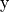
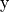

bayes
elements
Bayesian random elements with prior sampling and posterior fitting.
- class stats_learn.bayes.elements.Base(prior=None, rng=None)
Bases:
stats_learn.util.RandomGeneratorMixin,abc.ABCBase class for Bayesian random elements.
- Parameters
prior (stats_learn.random.elements.Base, optional) – Random element characterizing the prior distribution of the element parameters.
rng (int or np.random.RandomState or np.random.Generator, optional) – Random number generator seed or object.
- prior
Random element characterizing the prior distribution of the element parameters.
- Type
stats_learn.random.elements.Base, optional
- can_warm_start = False
- property dtype
Data type of random elements.
- Return type
np.dtype
- fit(d=None, warm_start=False)
Refine the posterior using observations.
- Parameters
d (array_like, optional) – The observations.
warm_start (bool, optional) – If False, reset is invoked to restore unfit state.
- property ndim
Dimensionality of random elements.
- Return type
int
- abstract random_model(rng=None)
Generate a random element with a randomly selected parameterization.
- abstract reset()
Restore unfit prior state.
- sample(size=None, rng=None)
Randomly generate elements.
- Parameters
size (int or tuple, optional) – Number or shape of set of random elements generated.
rng (int or np.random.RandomState or np.random.Generator, optional) – Random number generator seed or object.
- Returns
Array of random elements.
- Return type
np.ndarray
- property shape
Shape of the random elements.
- Return type
tuple
- property size
Size of random elements.
- Return type
int
- property space
The domain.
- Return type
- class stats_learn.bayes.elements.Dirichlet(prior_mean, alpha_0, rng=None)
Bases:
stats_learn.bayes.elements.BaseGeneric random element whose distribution is characterized by a Dirichlet process.
- Parameters
prior_mean (stats_learn.random.elements.Base) – Random element characterizing the mean of the Dirichlet process.
alpha_0 (float) – Dirichlet localization (i.e. concentration) parameter.
rng (np.random.Generator or int, optional) – Random number generator seed or object.
- property alpha_0
Dirichlet localization (i.e. concentration) parameter.
- can_warm_start = True
- property emp_dist
The empirical distribution formed by observations.
- property n
- property prior_mean
Random element characterizing the mean of the Dirichlet process.
- random_model(rng=None)
Generate a random element with a randomly selected parameterization.
- reset()
Restore unfit prior state.
- class stats_learn.bayes.elements.NormalLinear(prior_mean=(0.0,), prior_cov=((1.0,),), basis=None, cov=1.0, *, allow_singular=True, rng=None)
Bases:
stats_learn.bayes.elements.BaseNormal random variable with a mean linear in basis weights.
User defines basis tensors and parameterizes Normal prior distribution for weights.
- Parameters
prior_mean (array_like, optional) – Mean of Normal prior random variable.
prior_cov (array_like, optional) – Covariance of Normal prior random variable.
basis (array_like, optional) – Basis tensors, such that mean = basis @ weights. Defaults to Euclidean basis.
cov (float or numpy.ndarray, optional) – Covariance tensor.
allow_singular (bool, optional) – Whether to allow a singular prior covariance matrix.
rng (np.random.Generator or int, optional) – Random number generator seed or object.
- property basis
Basis tensors, such that mean = basis @ weights.
- can_warm_start = True
- property cov
- property prior_cov
Access the covariance of the prior.
- property prior_mean
Access the mean of the prior.
- random_model(rng=None)
Generate a random element with a randomly selected parameterization.
- reset()
Restore unfit prior state.
models
Bayesian random models.
Consist of jointly distributed random elements  and  with prior sampling
and posterior fitting.
and  with prior sampling
and posterior fitting.
- class stats_learn.bayes.models.Base(prior=None, rng=None)
Bases:
stats_learn.util.RandomGeneratorMixin,abc.ABCBase class for Bayesian random models.
- Parameters
prior (stats_learn.random.elements.Base, optional) – Random element characterizing the prior distribution of the element parameters.
rng (int or np.random.RandomState or np.random.Generator, optional) – Random number generator seed or object.
- can_warm_start = False
- property dtype
Data type of random models.
- Return type
dict of np.dtype
- fit(d=None, warm_start=False)
Refine the posterior using observations.
- Parameters
d (np.ndarray, optional) – The observations.
warm_start (bool, optional) – If False, reset is invoked to restore unfit state.
- property ndim
Dimensionality of random models.
- Return type
dict of int
- random_model(rng=None)
Generate a random element with a randomly selected parameterization.
- abstract reset()
Restore unfit prior state.
- sample(size=None, rng=None)
Randomly generate elements.
- Parameters
size (int or tuple, optional) – Number or shape of set of random elements generated.
rng (int or np.random.RandomState or np.random.Generator, optional) – Random number generator seed or object.
- Returns
Array of random elements.
- Return type
np.ndarray
- property shape
Shape of the random models.
- Return type
dict of tuple
- property size
Size of random models.
- Return type
dict of int
- property space
The domain.
- Return type
dict of spaces.Base
- static tex_params(key, value=None)
Format attributes as strings for LaTeX.
- class stats_learn.bayes.models.Dirichlet(prior_mean, alpha_0, rng=None)
Bases:
stats_learn.bayes.models.BaseGeneric random model whose joint distribution is characterized by a Dirichlet process.
- Parameters
prior_mean (stats_learn.random.models.Base) – Random model characterizing the mean of the Dirichlet process.
alpha_0 (float) – Dirichlet localization (i.e. concentration) parameter.
rng (np.random.Generator or int, optional) – Random number generator seed or object.
- property alpha_0
Dirichlet localization (i.e. concentration) parameter.
- can_warm_start = True
- property emp_dist
The empirical distribution formed by observations.
- property n
- property prior_mean
Random model characterizing the mean of the Dirichlet process.
- random_model(rng=None)
Generate a random model with a randomly selected parameterization.
- reset()
Restore unfit prior state.
- static tex_params(key, value=None)
Format attributes as strings for LaTeX.
- class stats_learn.bayes.models.NormalLinear(prior_mean=(0.0,), prior_cov=((1.0,),), basis_y_x=None, cov_y_x=1.0, model_x=None, *, allow_singular=True, rng=None)
Bases:
stats_learn.bayes.models.BaseRandom model characterized by a Normal conditional distribution with mean linear in basis weights.
User defines basis functions and parameterizes Normal prior distribution for weights.
- Parameters
prior_mean (array_like, optional) – Mean of Normal prior random variable.
prior_cov (array_like, optional) – Covariance of Normal prior random variable.
basis_y_x (Collection of callable, optional) – Basis functions. Defaults to polynomial functions.
cov_y_x (float or numpy.ndarray, optional) – Conditional covariance of Normal distributions.
model_x (stats_learn.random.elements.Base, optional) – Random variable characterizing the marginal distribution of
.allow_singular (bool, optional) – Whether to allow a singular prior covariance matrix.
rng (np.random.Generator or int, optional) – Random number generator seed or object.
- property basis_y_x
Basis functions.
- can_warm_start = True
- property cov_y_x
Covariance tensor characterizing fixed variance of .
- property model_x
Random variable characterizing the marginal distribution of
.
- property prior_cov
Access the covariance of the prior.
- property prior_mean
Access the mean of the prior.
- random_model(rng=None)
Generate a random element with a randomly selected parameterization.
- reset()
Restore unfit prior state.
- tex_params(key, value=None)
Format attributes as strings for LaTeX.